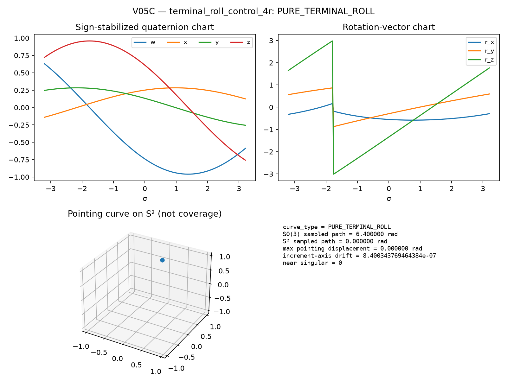

SO(3) or S².| Source | Export | Curve type | Samples | SO(3) path [rad] | S² path [rad] | Near singular |
|---|---|---|---|---|---|---|
generic_4r | EXPORTED | NONTRIVIAL_POINTING_CURVE | 161 | 6.1328 | 2.6519 | 0 |
terminal_roll_control_4r | EXPORTED | PURE_TERMINAL_ROLL | 161 | 6.4000 | 0.0000 | 0 |
exact_u_pair_4r | EXPORTED | NONTRIVIAL_POINTING_CURVE | 161 | 5.4181 | 2.4122 | 0 |
near_aligned_u_pair_4r | EXPORTED | NONTRIVIAL_POINTING_CURVE | 161 | 5.4170 | 2.4098 | 0 |
singular_4r_parallel | FAIL | SINGULAR_OR_EMPTY | 0 | 0.0000 | 0.0000 | 0 |
